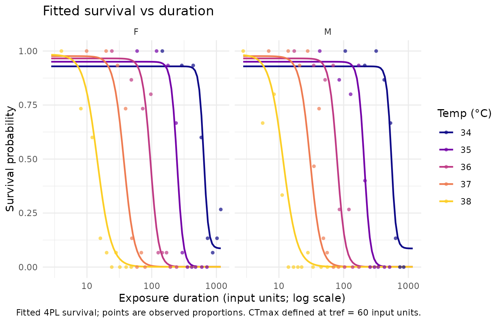

Case 4.2: Drosophila suzukii awake/coma response
Source:vignettes/case-study-suzukii-coma.Rmd
case-study-suzukii-coma.RmdCase 4.2 in the bayesTLS
supplement contains several analyses. freqTLS supports only the
awake/coma count arm. It does not replace the censored time-to-coma or
hurdle-productivity models with a different endpoint.
Exact awake-count aggregation
Within each temperature x exposure-level x sex cell,
n_awake is the number of individuals with missing
t_coma. Duration is the first recorded time in
the cell, and duration-zero controls are dropped.
cell <- interaction(dsuzukii$temp, dsuzukii$lvl, dsuzukii$sex, drop = TRUE)
coma <- do.call(rbind, lapply(split(dsuzukii, cell), function(d) {
data.frame(
temp = d$temp[1], lvl = d$lvl[1], sex = d$sex[1],
duration = d$time[1], n_total = nrow(d),
n_awake = sum(is.na(d$t_coma))
)
}))
coma <- droplevels(subset(coma, duration > 0))
coma_std <- standardize_data(
coma, temp = "temp", duration = "duration",
n_total = "n_total", n_surv = "n_awake", duration_unit = "minutes"
)Locked model
The awake/coma response is beta-binomial. The direct headline
formulas retain an intercept (~ sex), while
low, up, and k each vary with
centred assay temperature. The reference is 60 minutes and the estimand
is the relative midpoint.
coma_fit <- fit_4pl(
coma_std,
ctmax = ~ sex,
z = ~ sex,
low = ~ temp_c,
up = ~ temp_c,
k = ~ temp_c,
family = "beta_binomial",
t_ref = 60,
method = "wald",
quiet = TRUE
)
diagnose_tdt_fit(coma_fit)
#> # A tibble: 1 × 9
#> converged pd_hessian max_abs_gradient gradient_pass optimizer logLik n_params
#> <lgl> <lgl> <dbl> <lgl> <chr> <dbl> <int>
#> 1 TRUE TRUE 0.0000120 TRUE nlminb -130. 11
#> # ℹ 2 more variables: AIC <dbl>, all_pass <lgl>
check_tls(coma_fit)The lower-asymptote coefficients are weakly identified even though the optimizer, Hessian, and raw-gradient checks pass. The actual estimates and standard errors make that limitation visible.
coma_shape <- subset(
coma_fit$fit$estimates,
grepl("^(low|up|k):", parameter),
select = c(parameter, estimate, std.error)
)
coma_shape
#> parameter estimate std.error
#> 1 low:(Intercept) -44.2946407 1.782289e+04
#> 2 low:temp_c -20.2788616 8.461372e+03
#> 3 up:(Intercept) 2.6835505 8.010875e-01
#> 4 up:temp_c 0.4135033 4.957870e-01
#> 5 k:(Intercept) 2.7540874 1.471270e-01
#> 6 k:temp_c -0.2713143 9.005695e-02
coma_table <- tls(coma_fit, by = "sex", lethal = FALSE, method = "wald")$summary
names(coma_table)[names(coma_table) == "median"] <- "estimate"
coma_table
#> # A tibble: 4 × 5
#> sex quantity estimate lower upper
#> <chr> <chr> <dbl> <dbl> <dbl>
#> 1 F CTmax 36.5 36.4 36.6
#> 2 M CTmax 36.3 36.2 36.4
#> 3 F z 2.43 2.29 2.59
#> 4 M z 2.39 2.26 2.53Only CTmax and z are reported;
Tcrit is not. Large shape-coefficient standard errors or
warnings are part of the result, not material to hide.
plot_survival_curves(coma_fit$fit)
Unsupported arms
The individual t_coma values form a censored
time-to-event outcome, and prod requires a hurdle model for
zero reproduction plus positive clutch size. freqTLS 0.1.0 implements
neither. Use the corresponding bayesTLS Case 4.2 sections for those
analyses rather than treating the count model above as a
replacement.